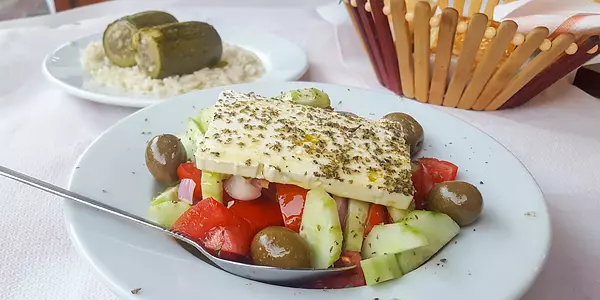
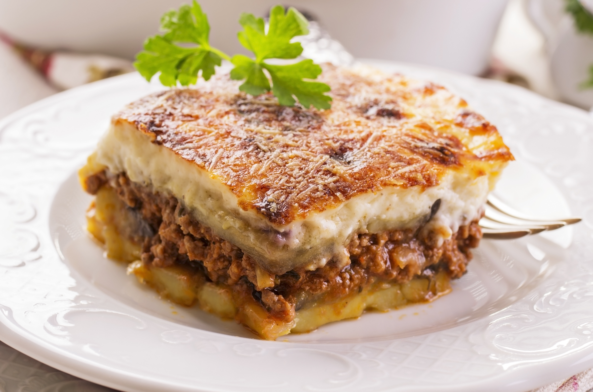
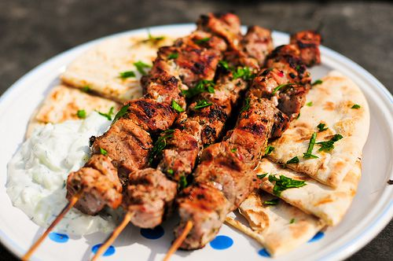
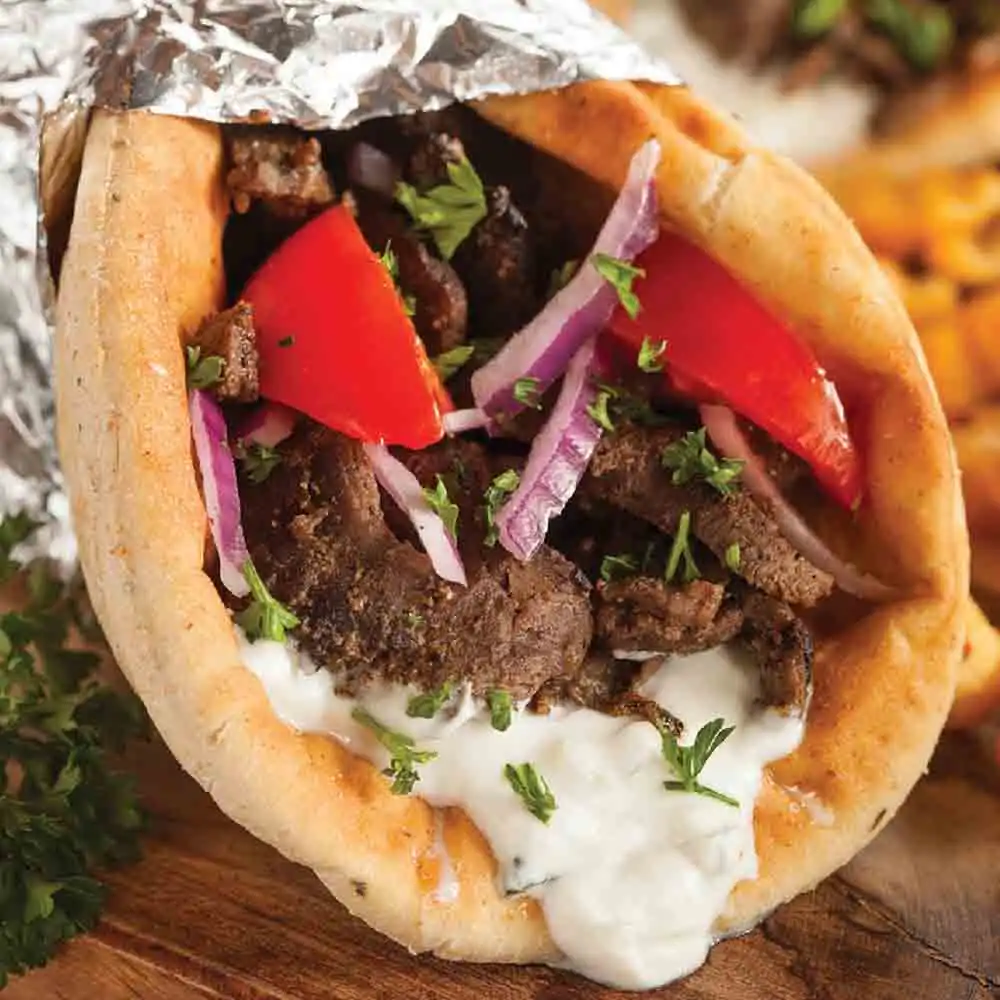

Sabores da Grécia
Pratos como moussaka, souvlaki, e salada grega são apenas algumas das delícias da culinária local.

Salada Grega
A culinária grega é famosa pelo uso de azeite, ervas frescas, vegetais e frutos do mar. É uma experiência rica em sabores e tradições milenares.

Moussaka
Moussaka é um típico prato grego, feito com carne moída, berinjela e bechamel gratinado.

Souvlaki
Souvlaki é um prato de carne grelhada em espetos, servido em pão pita com tomate, cebola e iogurte.

Gyros
Gyros é carne assada em forno vertical, servida em pão pita com verduras e molho tzatziki.